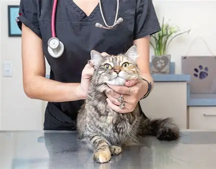

Essential Cat Care Tips
Taking care of a cat requires love, patience, and knowledge. Whether you're a new cat owner or have had cats for years, these essential tips will help you provide the best possible care for your feline friend.
Basic Care Guide
Make sure to provide high-quality cat food appropriate for your cat's age and health. Always keep a fresh bowl of water available.
Regularly brush your cat's fur to prevent matting, and trim their claws as needed.

Schedule regular visits to the vet to ensure your cat is healthy. Vaccinations and parasite control are crucial.